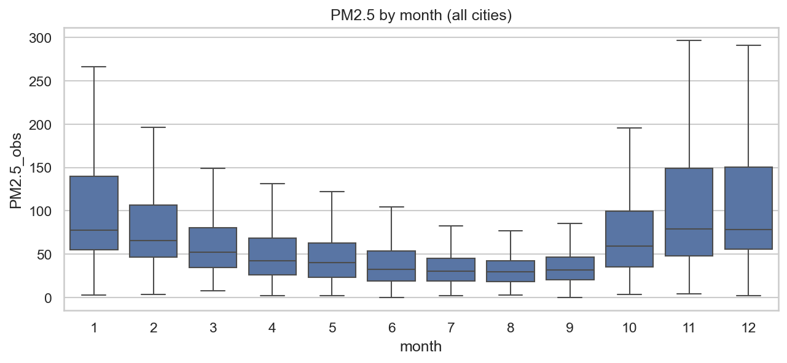
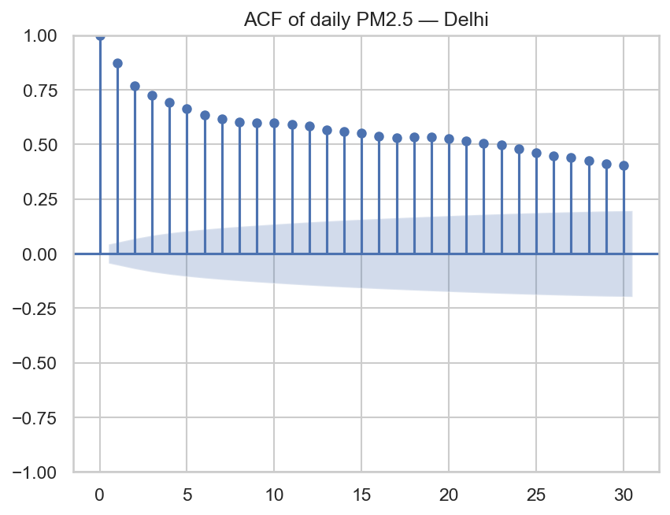
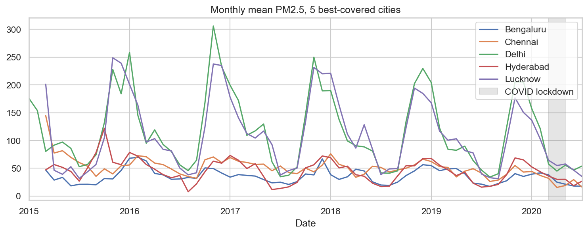
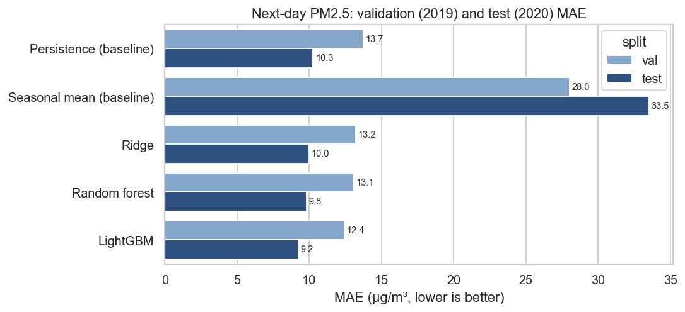
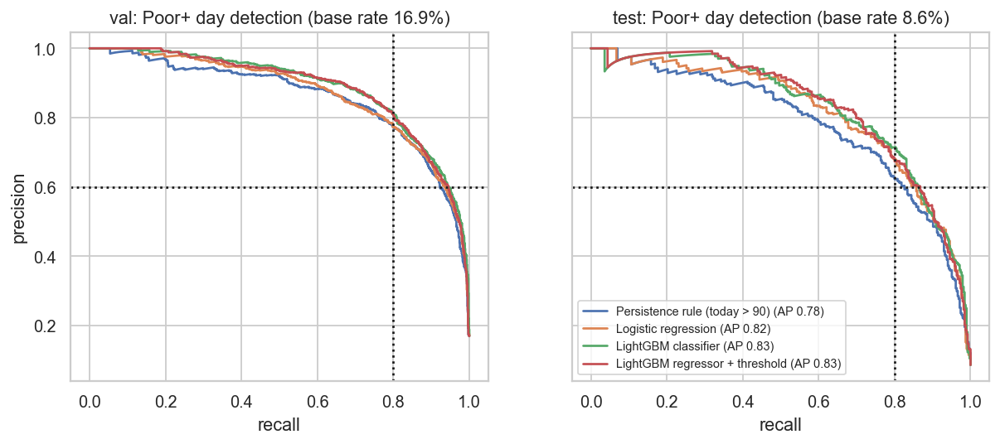
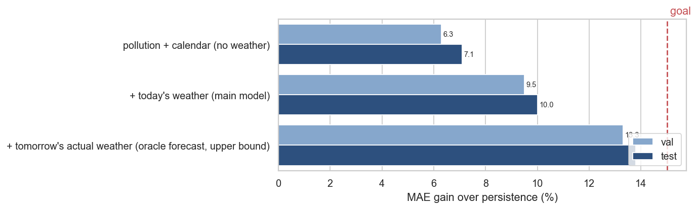
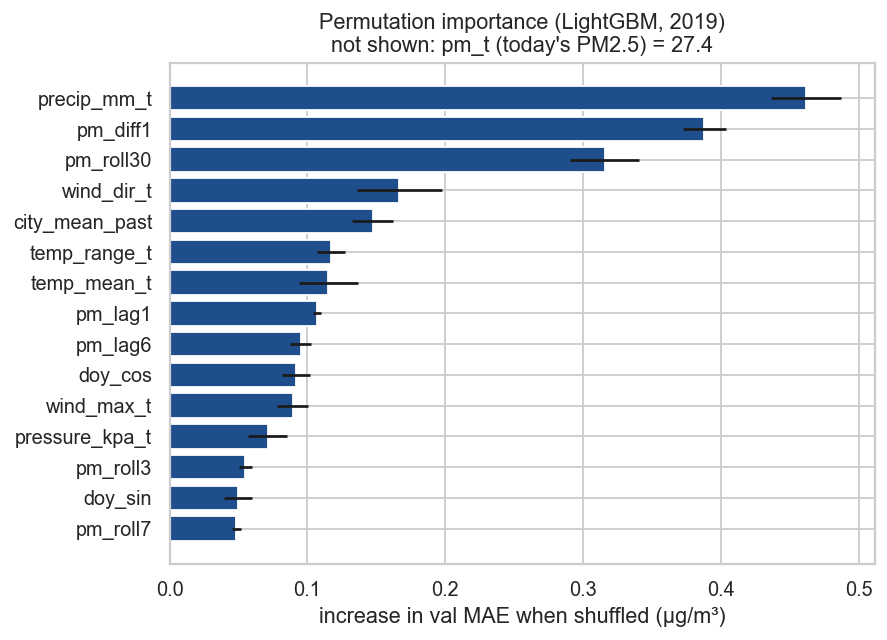
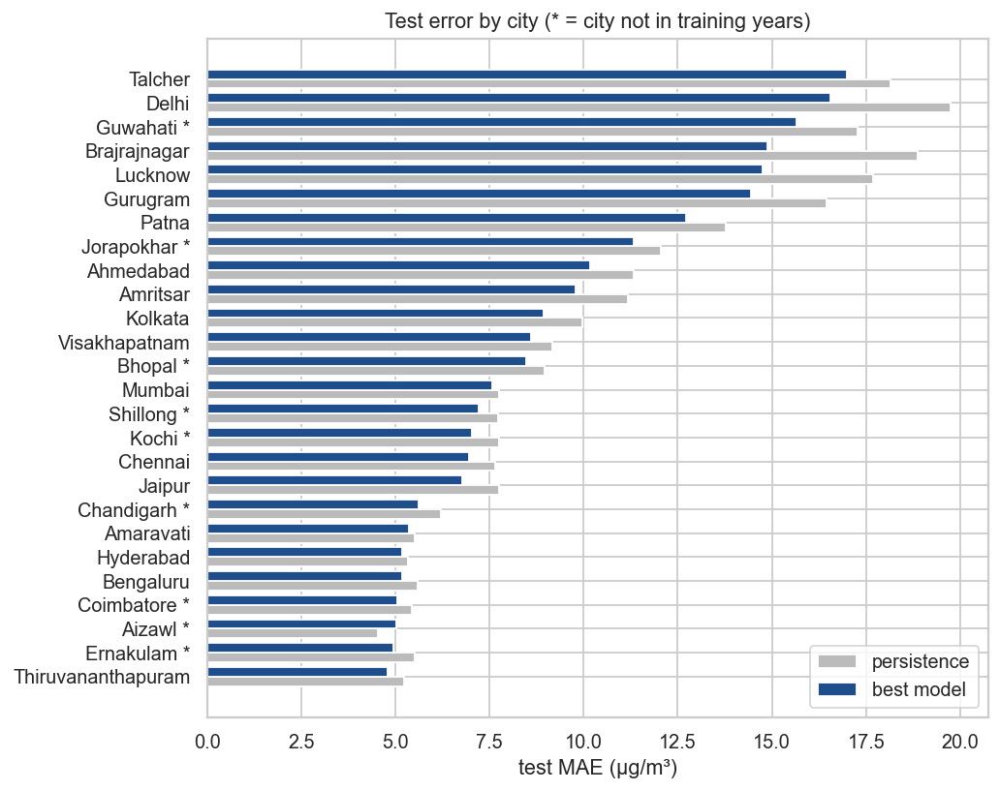
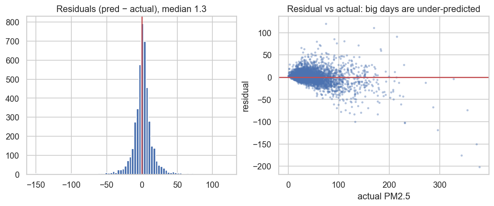
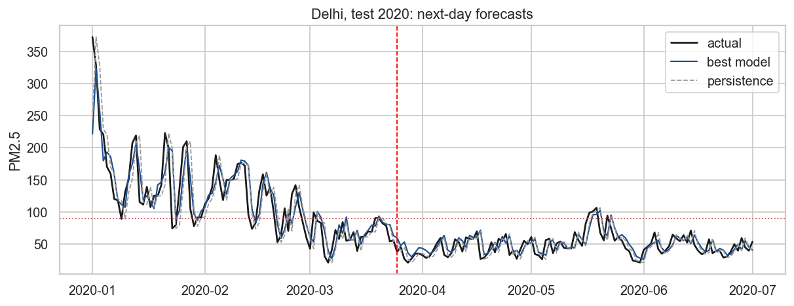

python -m src.run_all (seed 42)Fine particulate matter (PM2.5) is India's most harmful air pollutant. A one-day-ahead warning lets schools, outdoor workers and people with asthma plan around bad days. The question is:
Can we forecast a city's PM2.5 for tomorrow, and flag "Poor or worse" days (24-h PM2.5 > 90 µg/m³, the CPCB AQI breakpoint) one day ahead, better than simply assuming tomorrow will be like today?
We fixed two measurable goals before modelling and keep them unchanged in the evaluation:
| # | Goal | Why this bar |
|---|---|---|
| G1 | Test-year MAE at least 15% lower than persistence ("tomorrow = today") | Persistence is the forecast anyone can make for free; a model is only useful if it clearly beats it. |
| G2 | Poor+ days: recall ≥ 0.80 with precision ≥ 0.60 on the test year | Missing a bad day (false negative) costs more than an unneeded warning, but too many false alarms make people ignore them. |
| Source | What | Size | Why |
|---|---|---|---|
Kaggle rohanrao/air-quality-data-in-india, city_day.csv (compiled from the Central Pollution Control Board's public station data) |
Daily city averages of 12 pollutants + AQI | 29,531 city-days, 26 cities, 1 Jan 2015 – 1 Jul 2020 | Official, real, India-specific and messy (missing values, sensor faults), with a time order that makes leakage a real risk. |
NASA POWER daily API (MERRA-2 reanalysis), downloaded per city by src/weather.py |
Temperature (mean, range), rain, wind speed/direction, humidity, pressure | 52,260 city-days | Weather controls how pollution disperses (rain washes it out, winter inversions trap it). |
Coverage is very uneven (Figure 1 in the notebook): Delhi, Lucknow, Chennai, Hyderabad and Bengaluru have ~2,000 days, while 9 cities only appear in 2019–2020. This matters for the split (Section 4).
Each cleaning rule is implemented in src/clean.py, justified in its docstring, unit-tested in tests/test_clean.py, and counted in reports/cleaning_report.json.
| Issue | What we found | Decision and reason |
|---|---|---|
| Types | Date as text, City as text |
Parse dates; city as category. |
| Duplicates | 0 duplicate (City, Date) rows | Rule kept (keep first) so the pipeline stays safe on new data. |
| Gaps in the calendar | Some cities skip days | Reindex each city to a full daily calendar, so lag 1 really means yesterday. |
| Impossible values | 177 values above physical caps (CO 120, Benzene 35, Toluene 22) | Set to NaN: these are sensor/unit errors. |
| Suspicious spikes | e.g. Gurugram 950 µg/m³ on 29 Aug 2017, Guwahati 917 in May 2019, next to days of ~40 | 16 PM2.5 readings >300 and >6× the city's previous-30-day median, outside the Oct–Jan smog season, set to NaN. Smog-season extremes (Diwali, stubble burning, Nov 2016 Delhi-NCR smog) are kept: they are the days that matter most. |
| Sparse columns | PM10 54% and Xylene 61% missing in the training years | Dropped (threshold 50%, measured on train years only so the test period cannot influence the choice). |
| Missing values | Mostly structural: whole stations never measure some pollutants (heatmap) | Forward-fill ≤3 days within a city (past only; interpolation would use tomorrow's value and leak) + a was_missing flag; the rest is median-imputed inside the model pipeline. The target is never imputed. |

Key EDA insights and the decisions they led to (full plots and written insights in notebooks/01_eda.ipynb):


Feature engineering (src/features.py, 34 features). One row = (city, day t), target = observed PM2.5 on t+1. Features use only what is known at the end of day t: today's PM2.5 and its lags, rolling means/std, day-to-day change, the city's expanding past mean (a leak-free form of target encoding that also works for new cities), 9 other pollutants with missing flags, today's weather, and calendar features of the target day. Tomorrow's actual weather is kept aside and used only as an "oracle forecast" ablation (Section 5.3). tests/test_features.py changes every value after a cutoff date and checks that no feature row on or before the cutoff changes.
Split by time, never shuffled. Train = targets in 2015–2018 (13,237 rows, 17 cities), validation = 2019 (7,115 rows, 23 cities), test = Jan–Jun 2020 (4,464 rows, 26 cities). A random split would put tomorrow's row in training and today's in test; with autocorrelation 0.87 that would make every model look far better than it is.
Protocol. (1) Tune hyperparameters with 5-fold expanding-window cross-validation on the training years; folds are cut on dates so a validation fold is always later than its training data. (2) Refit on all training years and score on 2019; choose the model and the classification threshold here. (3) Refit on 2015–2019 and score once on 2020. Imputation, scaling and one-hot encoding live inside sklearn Pipelines, so they are re-fitted within every fold.
| Model | Why | Tuning |
|---|---|---|
| Persistence (baseline) | The free forecast to beat | – |
| Seasonal mean (baseline) | City × month average from training | – |
| Ridge regression | Simple, interpretable linear model | α grid (13 values) |
| Random forest | Non-linear, robust to outliers and collinearity | 8 random draws of depth / leaf size / features |
| LightGBM | Gradient boosting: usually best on tabular data, handles interactions (e.g. rain × season) | 25 random draws incl. loss (L2 / L1 / Huber) |
All three ML regressors predict y − today's PM2.5 and add it back. Learning the correction to persistence is easier than learning the level from scratch, and lets trees predict values outside the range seen in training. For the Poor+ flag we compare the persistence rule (today > 90), logistic regression and a LightGBM classifier (both with class weighting, tuned on CV PR-AUC), plus the LightGBM regressor with a threshold. Each threshold is the highest one that still gives recall ≥ 0.80 on 2019.
| Model | CV MAE (train yrs) | Val MAE 2019 | Test MAE 2020 | Test RMSE | Test gain vs persistence (95% CI) |
|---|---|---|---|---|---|
| Persistence | 21.5 ± 4.4 | 13.72 | 10.26 | 17.37 | – |
| Seasonal mean | 39.8 ± 11.7 | 28.03 | 33.52 | 42.21 | −227% |
| Ridge | 20.8 ± 4.4 | 13.21 | 9.99 | 15.95 | 2.6% [0.2, 4.8] |
| Random forest | 20.7 ± 4.5 | 13.08 | 9.80 | 15.67 | 4.5% [2.8, 6.2] |
| LightGBM | 20.2 ± 4.5 | 12.42 | 9.23 | 14.99 | 10.0% [8.2, 11.7] |
The confidence intervals come from a paired bootstrap over days (all cities on a day are resampled together, because their errors are correlated). The ranking is the same in CV, validation and test, which suggests the choice of LightGBM is not a fluke of one split. The CV MAE is higher than val/test because the early CV folds are 2015–2017, the most polluted years.
G1 is not met: LightGBM beats persistence by 10.0% (CI 8.2–11.7%), clearly and significantly, but short of 15%. The seasonal-mean baseline is 3× worse than persistence: knowing the season is far less useful than knowing yesterday.

| Model | Val recall / precision | Test recall | Test precision | Test F1 | Test PR-AUC |
|---|---|---|---|---|---|
| Persistence rule (today > 90) | 0.79 / 0.79 | 0.735 | 0.713 | 0.724 | 0.783 |
| Logistic regression | 0.80 / 0.77 | 0.790 | 0.691 | 0.737 | 0.815 |
| LightGBM classifier | 0.80 / 0.81 | 0.771 | 0.733 | 0.752 | 0.829 |
| LightGBM regressor + threshold (chosen on val F1) | 0.80 / 0.81 | 0.748 | 0.742 | 0.745 | 0.831 |
G2 is narrowly missed: precision (0.74) is well above 0.60, but recall falls from 0.80 on 2019 to 0.75 on 2020. The threshold was fixed on 2019 and 2020 has half the Poor+ rate (8.6% vs 16.9%), so the same threshold catches fewer borderline days. As a diagnostic only (not used for any choice), the test PR curve shows the LightGBM classifier could reach recall 0.80 at precision 0.72, so the model can meet G2; the miss comes from calibrating the threshold on a dirtier year. All ML classifiers beat the persistence rule in PR-AUC (0.83 vs 0.78).


Pollution history and calendar alone give 7%. Adding today's weather raises this to 10%. Giving the model tomorrow's actual weather (what a perfect weather forecast would provide) reaches 13.8% on test, still just under 15%. So G1 is probably out of reach with day-level data and these features, even with perfect weather; the remaining error is day-to-day variation (local emissions, fires, transport of smoke) that none of our inputs observe. Permutation importance agrees: after today's PM2.5, the most useful inputs are today's rainfall, the latest day-to-day change, the 30-day level and wind direction (Fig. 7).

Where does the model fail?



Limitations.
Bias.
Next steps.
With careful, leak-free features and a time-based split, a LightGBM model forecasts tomorrow's PM2.5 10% better than persistence on the unseen 2020 test year (95% CI 8–12%), consistently across CV, validation and test, in 25 of 26 cities and through the COVID lockdown shift. It detects Poor+ days with precision 0.74 and recall 0.75. Neither pre-set goal was fully met: the ablation shows that even perfect knowledge of tomorrow's weather would only reach ~14%, which points to unobserved local emissions as the limiting factor rather than the choice of model. The most valuable next step is therefore better inputs (weather forecasts, fire and upwind data), not a more complex model.
pip install -r requirements.txt # pinned versions, Python 3.12
python -m src.run_all # whole pipeline, ~11 min
python -m pytest -q # 11 tests incl. no-leakage
python -m src.build_report # rebuilds this PDF
Seed 42 everywhere (src/config.py). Tables behind every number: reports/tables/ (regression_results.csv, classification_results.csv, ablation_features.csv, summary.json, worst20_test.csv, error_by_city_test.csv, cv_results.csv, best_params.json).